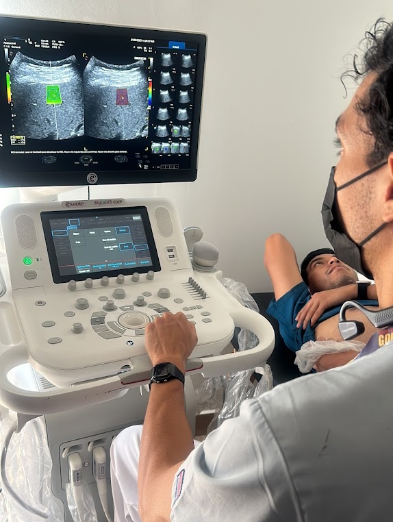
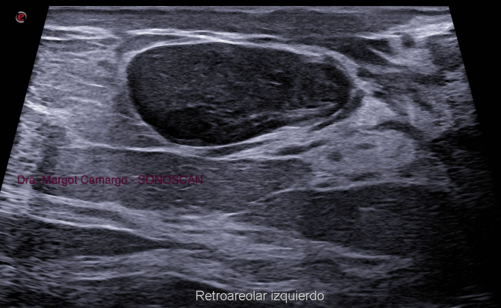

Servicios Especializados

Ultrasonidos Generales
- Abdominal
- Pélvico

Biopsias Guiadas
- Mama
- Tiroidea

Procedimientos Guiados
- Histerosonografía


Médico Radiólogo Certificado
Cédula Profesional: 10128091
Cédula Especialidad: 13842067